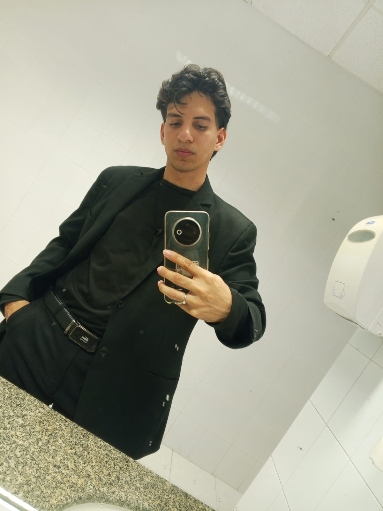

Luigi Suarez | WDD 130
Hello! My name is Luigi Suarez, and I'm from Barranquilla, Colombia. I enjoy music and animals, especially spending time listening to different genres and taking care of pets. I'm currently a student at BYU Pathway, studying Web Design and Development, which has been a rewarding journey as I learn to build websites and understand the digital world better. In addition to my studies, I'm working as a call center agent, a job that has been instrumental in helping me improve my second language—English. This experience has also helped me develop communication skills, patience, and the ability to work well under pressure. Balancing work and study can be challenging, but it’s also helping me grow personally and professionally. I'm excited about what the future holds and eager to keep learning and developing new skills.